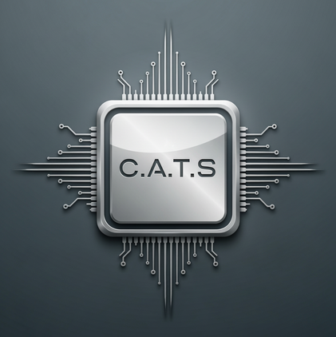

"Cybersecurity is much more than just an IT matter."
— Stéphane Nappo (*1973)
Predictive Analysis: Effective cyber defense is initiated before damage occurs. Global data streams are analyzed for patterns to detect attacks early. Instead of merely reacting to incidents, infrastructure is strategically hardened to preempt potential actors.
Surface Monitoring: The attack surface is monitored far beyond internal IT. All digital traces are continuously tracked – from forgotten systems to data found on the dark web. Vulnerabilities are identified and closed before they can be exploited from the outside.
Infrastructure & Red Teaming: We do not view an audit as a simple checklist. The entire architecture is put to the test through simulated attacks. Gaps overlooked by automated systems are specifically uncovered to lastingly strengthen defenses.
Compliance & Human Factor: Compliance with security standards is ensured, but the audit goes deeper. The human factor is analyzed through social engineering tests. It is ensured that security rules do not just exist, but are effectively implemented in daily operations.
Tactical & Strategic: Complex data is translated into clear statements. Precise instructions for the IT level and comprehensible situational reports for management are created. Technical details are processed to serve as a sound basis for decision-making.
Strategic Advisory: Analysis is followed by implementation support. Concrete plans are developed to adapt the security strategy to current threats. This ensures that security functions not as an obstacle, but as a stable foundation for the company.
Therapeutic Practices: Acute threat level. Focus on patient data protection and the integrity of professional secrecy.
Tech Giants: Maximum threat level. Focus on IP protection and active defense against state actors.
Neobanks: Medium threat level. Focus on regulatory compliance and transaction security.
"A weak man is not peaceful, he is weak."
— Jordan B. Peterson (*1962 - † ....)
Cybersecurity is not a shield, but active competence. We enable companies not just to manage risks, but to control them with sovereignty.
Für vertrauliche Anfragen und strategische Beratungen kontaktieren Sie uns direkt unter:
Gesicherte Kommunikation via Tallinn, Estland.